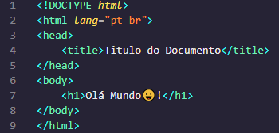

Olá seja muito bem vindo a minha página secundaria😆!
Para começarmos vou lhe mostrar como criar uma pagina basica usando primeiro HTML e após o entendimento
iremos encrementa-lá usando o CSS e explicar rapidamente uma parte do JavaScript(já que o JavaScript é mais extenço
ele requer mais atenção por isso falaremos dele após entendermos o HTML e o CSS), então vamos prosseguir e parar de
enrolar e vamos começar a codar.
HTML
HTML ela nada mais é que uma linguagem de marcação, sim exatamente isso uma linguagem de marcação HTML
é uma liguagem de marcação diferente do que muitas pessoas pensam o HTML não é uma linguagem de programação, ela
é usada no desenvolvimeto web principalmente para o desenvolvimento de paginas e sites, ela é uma linguagem Fron-End,
ou seja é usada para p desenvolvimento da parte visual do site juntamente com o CSS e o JavaScript, Caso você queira
virar um desenvolverdor Front-End essas são as principais linguagemque você verá e terá que aprender para essa especialização.
Agora vamos ver umas Tags da linguagem HTML :
Está imagem mostra a